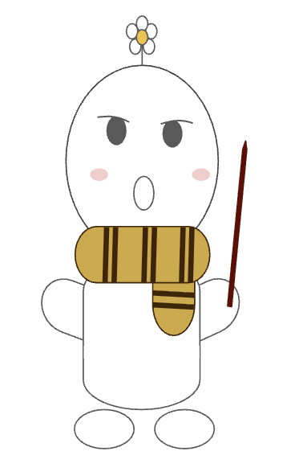
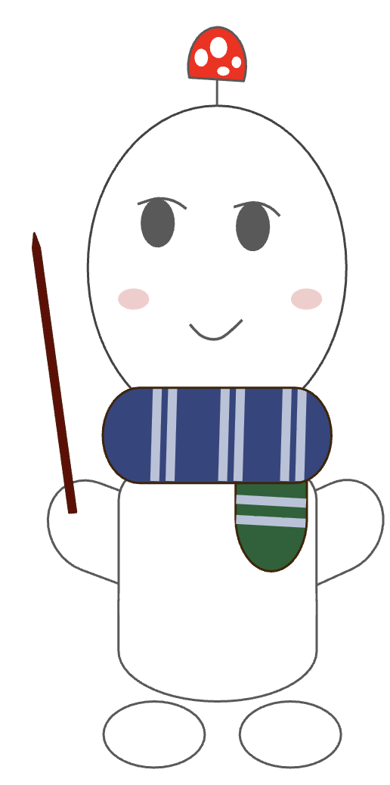
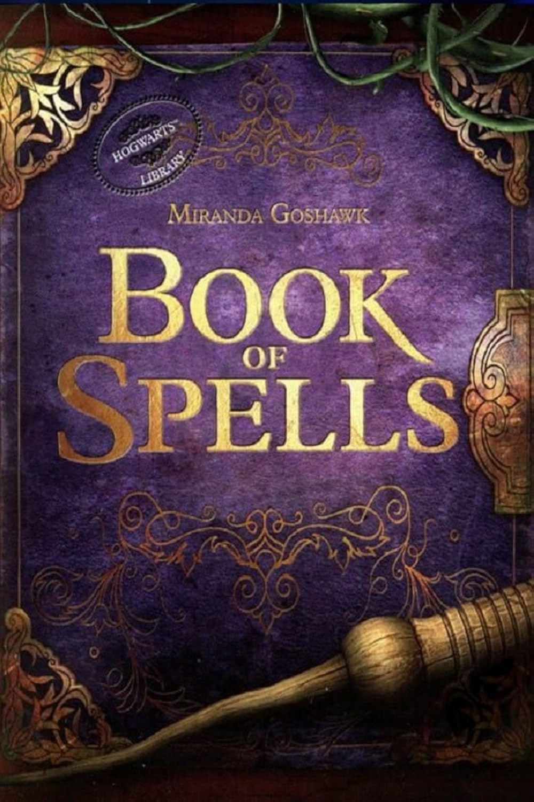

Guess!
恭喜妳！ 成功開啟 求婚魔法試煉 ❤️
接下來，妳將成為哈利波... 芒 ！

通過一系列的考驗之後
就能得到屬於妳的魔法石！
就能得到屬於妳的魔法石！
什麼？ 歐 別擔心～
主辦者 professor 爐
會在旁協助妳的 🫡

主辦者 professor 爐
會在旁協助妳的 🫡
首先，妳需要通過初階魔咒測試
根據不同情境
回答使用的魔咒為何
準備好了嗎？
根據不同情境
回答使用的魔咒為何
妳可以隨時點擊本書 ...
觀看魔咒說明
 觀看魔咒說明
準備好了嗎？
#1
| Accio | 速速前 | 將心想中的物體迅速召喚到施咒者身邊。 |
| Aguamenti | 水水噴 | 從魔杖尖端召喚出乾淨可飲用的清水。 |
| Alohomora | 開鎖咒 | 解開未受魔法保護或結構簡單的門鎖。 |
| Aparecium | 現形咒 | 讓隱形文字重新顯現字跡的咒語 |
| Ascendio | 升升降 | 使施咒者者上升的咒語 |
| Avada Kedavra | 索命咒 | 使中咒者立即且無痛苦地死亡。 |
| Banishing Charm | 驅逐咒 | 與「速速前」相反，可讓施咒者心中所想的物件迅速遠離。 |
| Capacious Extremis | 無形伸展咒 | 可擴展物體的內部空間。 |
| Colloportus | 密密膠 | 用來鎖門的咒語 |
| Confringo | 爆炸咒 | 可以炸毁任何被擊中的物體。 |
| Confundo | 迷糊咒 | 能讓人變得迷糊，搞不清楚身邊發生的事情 |
| Crucio | 酷刑咒 | 使其中咒者產生激烈的抽搐與痙攣。 |
| Deletrius | 吹吹除 | 使煙霧消散的咒語 |
| Densaugeo | 涎涎牙 | 使中咒者的門牙以驚人的速度增長 |
| Descendo | 低低降 | 使目標物體或人向下移動的咒語。 |
| Diffindo | 切除咒 | 使東西突然迸裂開來的咒語 |
| Duro | 硬化咒 | 將物體變成石頭或使其變硬的變形咒語。 |
| Enervate | 復甦咒 | 用於喚醒被昏迷咒擊中或昏倒的人 |
| Engorgio | 暴食咒 | 使物體瞬間變大的咒語 |
| Evanesco | 消失咒 | 使物體完全消失的消失咒，是高級變形術的一種。 |
| Expecto Patronum | 護法咒 | 用來召喚出守護神，以驅趕催狂魔。 |
| Expelliarmus | 繳械咒 | 使對手手中的武器飛離其掌控。 |
| Ferula | 咕咕圈 | 路平教授用來固定榮恩斷腿時用的咒語。 |
| Fianto Duri | 固若金湯 | 創造強力防護屏障的咒語 |
| Finite Incantatem | 魔咒消 | 一個可以使其他魔法解除的咒語 |
| Furnunculus | 熔熔沸 | 使中咒者皮膚上長出又大又醜的疔瘡 |
| Geminio | 複製咒 | 創造原物複製品。 |
| Impedimenta | 障礙咒 | 可使攻擊者暫時凍結或使對手的攻擊速度變慢。 |
| Imperio | 蠻橫咒 | 可完全控制受害者的心智與行動。 |
| Incarcerous | 繩繩禁 | 召喚繩子綑綁目標的咒語 |
| Incendio | 生火咒 | 使魔杖尖端射出火焰，用來生火 |
| Legilimens | 破心術 | 侵入對方記憶或心智的咒語 |
| Levicorpus | 倒倒吊 | 使中咒者被倒吊在半空中。 |
| Liberacorpus | 退退降 | 倒倒吊咒的反咒。 |
| Lumos | 路摸思/魔杖照明咒 | 使魔杖發出亮光，照亮黑暗 |
| Mobiliarbus | 呼呼移 | 移動物體 |
| Morsmordre | 黑魔標記 | 召喚黑魔標記 |
| Muffliato | 嗡嗡鳴咒 | 在附近任何人的耳朵裡填入無法識別的蜂鳴聲，防止偷聽 |
| Nox | 魔杖熄滅咒 | 路摸思的反咒，用來熄滅魔杖尖端的光芒 |
| Obliviate | 遺忘記憶咒 | 用來抹除特定記憶 |
| Oppugno | 衝衝攻 | 驅使物體攻擊對方 |
| Orchideous | 噗噗蘭 | 使魔杖尖端射出一束花 |
| Periculum | 啪銳喀鑰 | 發射紅色火花作為求救信號 |
| Point me | 指引我方向/定向咒 | 使魔杖指向北方的導航咒語 |
| Portus | 港口現 | 將物體變成港口鑰，創造瞬間傳送裝置 |
| Prior Incantato | 呼呼前咒現 | 使魔杖倒帶並呈現先前施展過 |
| Protean Charm | 變化咒 | 將多個物體連接，一起統一變化的高級魔法 |
| Protego | 破心護 | 創造一個屏障來阻擋咒語攻擊 |
| Protego Horribilis | 破心護,強強厲威 | 標準護身咒的強化版本，提供針對黑魔法的強力防護 |
| Protego Totalum | 全全破心護 | 在住所或區域周圍創建長期全面保護。 |
| Quietus | 噓噓靜/悄聲咒 | 降低聲音，是擴音咒的反咒 |
| Reducio | 啾啾縮/收縮咒 | 使人或動物的身體縮小 |
| Reducto | 曝曝消/消除咒 | 將阻擋在前方的固體物炸開 |
| Relashio | 嘶嘶退 | 使魔杖射出火花，使對方退後 |
| Rennervate | 力力復/復甦咒 | 用來恢復精力或喚醒昏迷的人 |
| Reparo | 修復咒 | 修復損壞物品 |
| Repello Muggletum | 去去,麻瓜走 | 驅逐麻瓜，防止麻瓜誤入魔法世界。 |
| Rictusempra | 胳肢咒 | 使中咒者全身發癢，並捧腹大笑 |
| Riddikulus | 叱叱,荒唐 | 使幻形怪變成可笑的事物，並使其消失 |
| Scourgify | 滅滅淨/清潔咒 | 一個用來清理物品 |
| Sectum Sempra | 撕淌三步殺 | 在目標身上造成深層隱形劍狀傷口，是石內卜自創的黑魔法。 |
| Serpensortia | 蛇蛇攻 | 使魔杖射出一條蛇來攻擊目標 |
| Silencio | 默默靜/靜默咒 | 使對方無法發出聲音 |
| Sonorus | 哄哄響/擴音咒 | 擴大施咒者聲音 |
| Specialis Revelio | 原形立現 | 揭開施加在物體或魔藥上的任何咒語 |
| Stupefy | 昏迷咒 | 使對手陷入昏迷 |
| Tarantallegra | 塔朗泰拉跳 | 讓中咒者的雙腿不由自主地舞動 |
| Tergeo | 哆哆潔 | 清潔和乾燥物體表面 |
| Vulnera Sanentur | 速速癒合 | 專門治療深層傷口的如歌般咒語，撕淌三步殺的反咒。 |
| Wingardium Leviosa | 漂浮咒 | 讓物體漂浮在空中或緩緩飛過 |